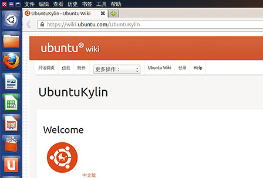

<div class="header"><h1 class="slidetitle">我們的wiki</h1></div>

<div class="main">

<div class="text">

<div>
<p>UbuntuKylin英文官方主頁，可快速定位並加入各個相關團隊，包括：開發者團隊、社區團隊、質量確保團隊、發布團隊、文檔團隊。</p>
</div>

</div>



</div>

